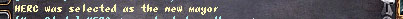
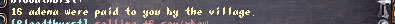
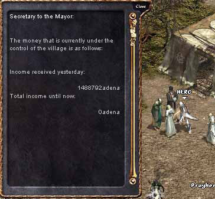
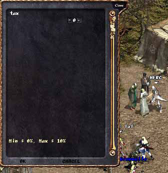

2003年2月20日
故鄉系統初體驗

玩家當選為市長的訊息（HERC 被選為新的市長）。
在第十二章中，大家可以給予(等級 * 等級 * 10)的費用去成為一個城鎮的市民，遊戲時間每個月（現實時間五天）都會選出一個新市長，在村落的區域中打怪最多的會成為市長，而市長可以設定一個稅率（目前還不知道有甚麼意思，城堡的王族幹嘛？），而城鎮中的市民會根據他們打怪的程度而得到一些金錢。另外，假如市民沒有盟屋或城堡，他們在使用回家卷是會回到自己的城鎮中，而不是最近的城鎮。

（你的城填給予你16金幣）
在美國伺服器上Amer的48級法師在威頓村區域打了1%的經驗值，分到了16金幣。而同一伺服器的練功狂HERC則分到了138金幣。

上圖為市長與故鄉系統秘書對話的視窗內容，市長可以看到城鎮的收入及一個不知有何用的"到目前為此的收入"。HERC當選為市長後從這個NPC得到384金幣。

市長可以設定一個稅率，但在對話視窗中並沒有任何描述，因此HERC與各市長一樣感到非常混亂，究竟那個稅率有何用呢？
故鄉系統可能會給予市長一個有趣的選擇，你想水錢較貴，但能夠分得更多的金錢，還是水錢較便宜呢？
Copyright(C)1998-2003 Gabriel Leung. All Right Reserved.